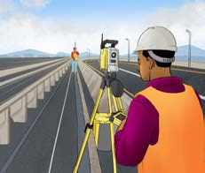
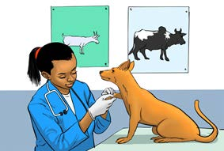
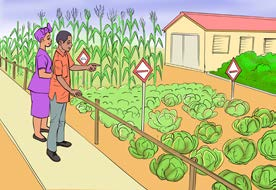

No.
Careers
Descriptions of careers
6.
Botany
Botany deals with plants. The person who deals with the scientific study of plants is called a botanist.
7.
Veterinary medicine
Veterinary deals with disease diagnosis and treatment of animals. The person who deals with this career is called a veterinarian.
Some of scientific careers are shown in Figure 12.
Science teacher
Pharmacist

Engineer
Science
Medical doctor

Veterinarian
Chemist

Botanist
Figure 12: Science professionals